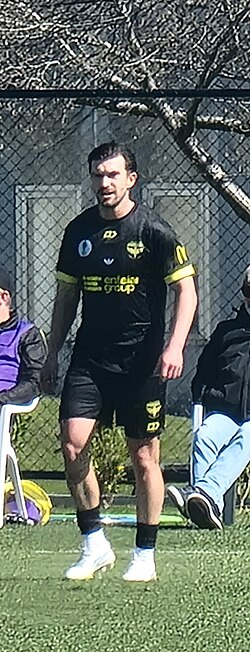
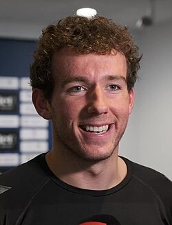

| Nombre | Posición | Edad | Bibliografía | Portada |
|---|---|---|---|---|
| Oliver Sail | Portero | 29 |
Oliver Sail es portero seguro, con gran capacidad de reacción y experiencia defendiendo la portería de Nueva Zelanda. |
|
| Francis de Vries | Lateral izquierdo | 30 |
Francis de Vries es lateral izquierdo sólido, combina defensa fuerte con capacidad de proyección al ataque. |
|
| Tim Payne | Lateral derecho | 31 |
Tim Payne es lateral derecho experimentado, aporta equilibrio entre defensa y ataque para la selección neozelandesa. |
 |
| Michael Boxall | Defensa central | 37 |
Michael Boxall es defensa central veterano, clave en la organización defensiva y el juego aéreo del equipo. |
|
| Alex Rufer | Mediocampista | 29 |
Alex Rufer es mediocampista con buena visión de juego, encargado de distribuir balones y mantener el ritmo del partido. |
|
| Joe Bell | Mediocampista | 26 |
Joe Bell es mediocampista defensivo, fuerte en recuperación de balón y aportando equilibrio entre defensa y ataque. |
 |
| Sarpreet Singh | Mediocampista | 26 |
Sarpreet Singh es mediocampista creativo, capaz de asistir y generar oportunidades de gol para sus compañeros. |
|
| Callum McCowatt | Mediocampista / Extremo | 26 |
Callum McCowatt es extremo habilidoso, destaca por su velocidad, regate y capacidad de asistir en ataque. |
|
| Elijah Just | Extremo izquierdo | 25 |
Elijah Just es extremo izquierdo rápido y técnico, aporta desequilibrio en las bandas y definición frente al arco. |
|
| Kosta Barbarouses | Extremo derecho | 35 |
Kosta Barbarouses es extremo derecho veterano, con gran experiencia internacional y capacidad de generar peligro en ataque. |
|
| Ben Waine | Delantero | 24 |
Ben Waine es joven delantero con gran instinto goleador y velocidad, prometedor en la ofensiva de Nueva Zelanda. |
|
| Chris Wood | Delantero | 33 |
Chris Wood es delantero experimentado y referente ofensivo, conocido por su capacidad goleadora en competiciones internacionales. |